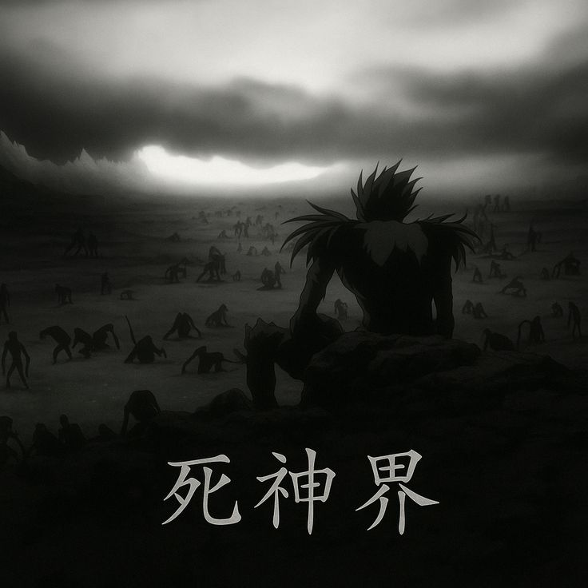
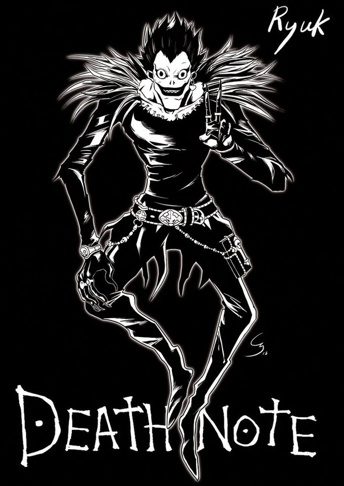
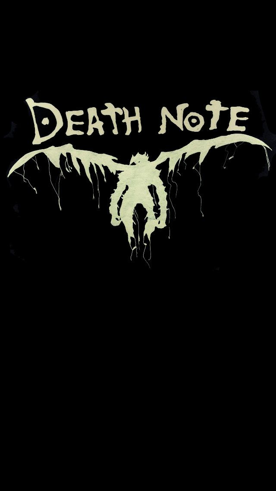
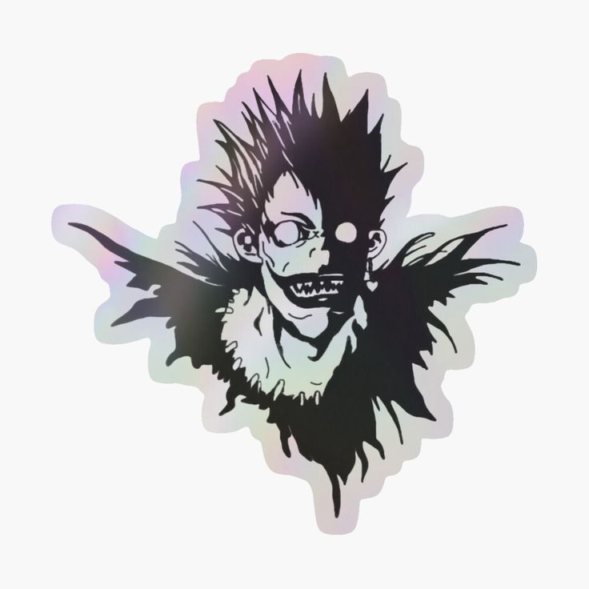
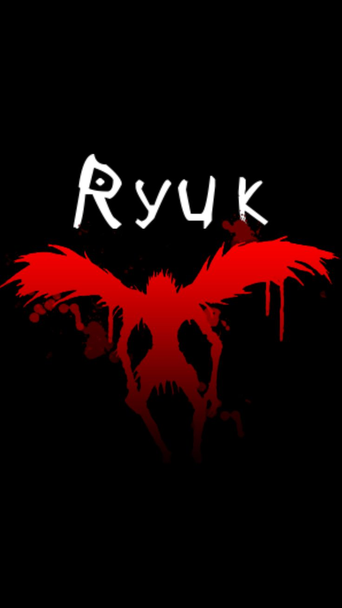
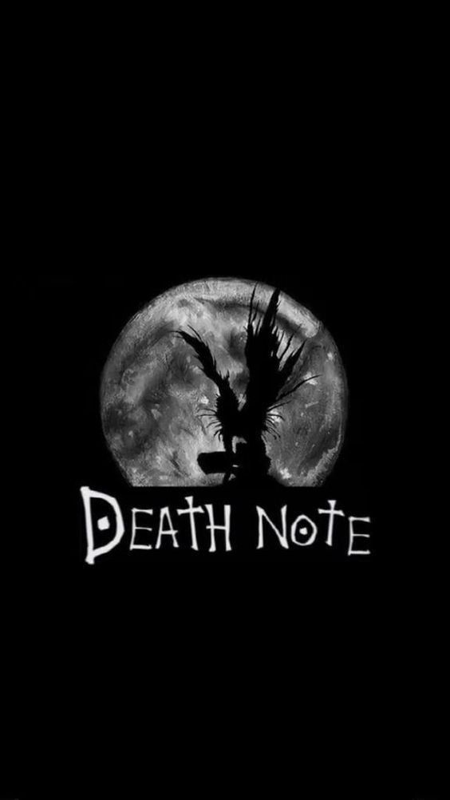

RYUK
The Boredom of Eternity
In the vivid universe of Death Note, Ryuk emerges as an extraordinary catalyst—a Shinigami whose very existence is defined by boredom in a realm where death has lost its thrill. Unlike his kin, who are seemingly resigned to the monotony of watching mortal fates unravel, Ryuk finds life in the mundane unworthy of his ancient presence. His decision to drop the Death Note into the human world is less an act of malevolence and more a desperate bid to break the gnawing tedium of eternity. This singular act of rebellion against an existence devoid of excitement makes him not a typical villain, but rather an observer whose detached amusement underpins the tragic fallibility of mankind.
Life Beyond the Threshold
Although the intricate layers of his own origin story remain largely ambiguous in the series, Ryuk’s nature as an “otherworldly” being suggests an existence measured in centuries rather than years. The realm of the Shinigami, a place where death itself is routine, offers little in the way of novelty or change. In this timeless void, Ryuk’s perpetual boredom becomes his defining trait. He is not born of malice or ambition; rather, his intrinsic disinterest in a static afterlife propels him toward human mischief. His very presence, therefore, acts as a symbolic manifestation of inevitability—the idea that even death, when personified, can harbor an insatiable desire to watch the unpredictable dance of life unfold.
An Audacious Experiment
In an act that echoes like a challenge to the monotony of existence, Ryuk purposefully leaves behind a Death Note—a notebook that wields the divine power to end lives with a mere thought. By releasing the notebook into the human realm, he unwittingly ignites a chain of events that will upend the balance of morality and justice. Far from a benevolent guide, his role is purely observational, motivated solely by his longing for amusement. This experiment—observing how a human, Light Yagami, grapples with godlike power and the heavy burden of playing judge—serves as a morbidly entertaining spectacle for Ryuk, whose detached interest in outcomes underscores his intrinsic alienation from humanity.
The Aesthetics of the Abyss
The creative process behind Ryuk’s character is itself a study in purposeful design. Takeshi Obata, the artist responsible for visualizing Ryuk, faced the formidable challenge of creating a being that was both repulsive and fascinating. Initially conceptualized with a more human visage, Ryuk’s design underwent radical changes to ensure that his appearance would not overshadow the mortal protagonist, Light Yagami. His final design—a gaunt, almost skeletal figure with spiky black hair, piercing yellow eyes, and retractable wings—encapsulates his role as a creature from beyond the ordinary. This “reptile-like” aesthetic not only accentuates his status as an outsider but also hints at a deeper, almost allegorical representation of death as unknowable and indifferent.
A Harbinger of Philosophical Paradoxes
Ryuk stands as a living paradox—a creature who delights in the chaos of human actions without ever truly inserting himself into their morality-driven conflicts. He embodies the detachment often ascribed to supernatural forces: an impartial witness to the spectacle of life and death, yet incapable of feeling genuine empathy. Through his eyes, the audience is invited to question the nature of justice and the burden of omnipotence. His passive interference, marked by a reluctance to either aid or hinder Light, underscores a philosophical meditation on the role of fate. Is he a mere observer, a neutral actor in a preordained cosmic play, or does his very existence challenge the deterministic frameworks that govern both human and divine actions? In pondering these questions, one is drawn to the timeless debate over freewill versus predestination.
The Allure of Human Quirks
Among the few distinctly human traits that Ryuk adopts is his peculiar fondness for apples—a craving he likens to humanity’s dependence on vices like cigarettes and alcohol. This idiosyncratic habit is more than mere comic relief; it is a metaphor for the allure of novelty and temptation. While the Shinigami realm offers him an existence marked by endless ennui, the human world, brimming with sensory delights and moral complexity, presents an addictive contrast. His preference underscores a subtle commentary on how even beings far removed from mortal concerns are not immune to the lures that define earthly existence. Through this seemingly trivial addiction, Ryuk becomes a bridge between the mundane and the mystical, emphasizing that the quest for novelty is a universal condition.
Shadows of Unspoken History
One of the most compelling aspects of Ryuk’s character is not what is explicitly revealed about his past, but rather the deliberate mystery that shrouds it. The series offers few clues about his origins, leaving much to the imagination of its audience. This absence of a detailed backstory transforms Ryuk into an archetype—a projection of our own preoccupations with mortality, ennui, and the unknown. His unelaborated history is a narrative device that forces us to contemplate the broader questions of life itself: what does it mean to exist when every moment is predetermined, and how does one break free from the shackles of inevitability? The gaps in his history prompt us to construct our own interpretations, making his character as much a mirror of our existential dilemmas as it is a mere figment of a fictional world.
Echoes in Popular Culture
Beyond the pages of the manga and screens of anime, Ryuk’s influence reverberates through popular culture as a symbol of death’s impartiality and unpredictability. His unsettling calm and dry humor have cemented him as one of the most memorable embodiments of the supernatural in modern storytelling. Critics and fans alike are drawn to his enigmatic allure—a reminder that the end of life is not always cloaked in sorrow or malevolence, but sometimes in an inscrutable curiosity about the human condition. In this way, Ryuk transcends his narrative role, becoming a cultural touchstone that challenges us to confront the nature and inevitability of our own mortality.
The Enduring Enigma
Ultimately, Ryuk’s backstory is as much a canvas of deliberate omissions as it is of subtle revelations. His reluctant meddling in human affairs serves as a constant reminder that there are forces beyond our understanding—forces that are neither entirely good nor entirely evil, but exist in a permanent state of detached amusement. He invites us to embrace the unsettling ambiguity of life, to wonder at the mystery woven into the fabric of existence, and to acknowledge that sometimes, the most profound stories are those left untold. Every encounter with Ryuk becomes an invitation to probe deeper into our own fears, desires, and the very nature of purpose in an indifferent universe.
A Reflection on Mortality and Meaning
In the end, Ryuk is more than just a character from a manga—he is a philosophical statement about the duality of life and death. His nonchalant interference in human affairs, his enigmatic design, and his cryptic behavior compel us to confront the disquieting truths about our existence. How do we find meaning in a world ruled by chance and the inexorable pull of fate? Ryuk’s backstory, rich with uncertainty and symbolic depth, offers no definitive answers but instead challenges us to engage with life’s most profound questions. His legacy is not written in the details of his origin, but in the lasting impact of his presence on those who dare to question the apparent randomness of fate.
Beyond the Veil
While the narrative of *Death Note* may leave many of Ryuk’s secrets unexplored, the very ambiguity of his backstory ensures that his character remains an enduring enigma. His actions force us to ponder whether the monotony of an eternal existence might one day drive even celestial beings to seek chaos as a remedy. Could it be that our deepest fears about the finality of life are mirrored in Ryuk’s own escapades across the boundaries of death and time? In exploring these questions, we are invited to reflect on art, existence, and the roles we all play in the grand tapestry of fate.
Conclusion
Ryuk’s story is a masterclass in the art of suggestion—a narrative that offers more questions than answers. His origins, wrapped in mystery, propel him into a realm where boredom and curiosity converge to spawn a chain of events that redefine the balance between life and death. As we follow his detached yet piercing gaze over human folly, we are reminded that, in the shadow of inevitable mortality, every moment of existence is an invitation to explore the darker corridors of meaning and purpose. Ryuk challenges us to accept that sometimes, the most profound truths are found not in explicit histories, but in the spaces left for our own interpretations.
Further Musings
Beyond the clear-cut storyline, Ryuk also invites contemplation of broader themes—such as the cultural symbolism of Shinigami in Japanese lore and the modern reinterpretation of death in literature and film. His role sparks dialogues about fate versus free will, the interplay between detachment and intervention, and the universal human struggle against the onset of oblivion. If the philosophical implications of a bored deity meddling in human affairs intrigue you, exploring how similar figures are portrayed across various cultures might yield even richer insights into our own perceptions of mortality.